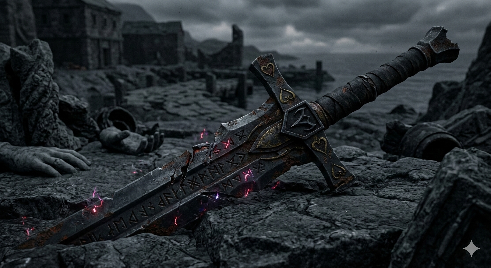

Lama spezzata dei Vayne
"Un frammento di acciaio nero rinvenuto nelle catacombe di Porto Althamar. Reca incisioni in una lingua arcaica legata alle antiche casate guerriere."
Stato: Smarrito/Abbandonato.
Nota dell'Archivista: Emana una debole risonanza aetherica negativa.